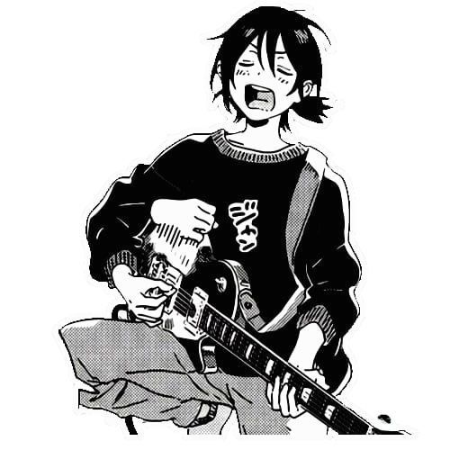

Bienvenido al portfolio de
Nikklvsaki!
Futura web developer con complejo de loca de los gatos
Sobre mi:
Me encanta programar sobretodo HTML y CSS mientras escucho musica pop inglesa. Tambien hablar con la gente para mientras hago codigo ya que entablar conversaciones o escuchar musica me ayuda a concentrarme.

